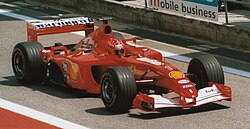
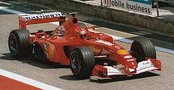

Formula One originated from the World Manufacturers' Championship (1925–1930) and European Drivers' Championship (1931–1939). The formula is a set of rules that all participants' cars must follow. Before World War II, several Grand Prix racing organisations made suggestions for a new championship to replace the European Championship, but due to the suspension of racing during the conflict, a new International Formula for cars did not become formalised until after the war. Formula One was a formula agreed upon in 1946 to officially become effective in 1947. The first Grand Prix in accordance with the new regulations was the 1946 Turin Grand Prix, anticipating the formula's official start. The new World Championship was instituted to commence in 1950.[1][2][3] The first world championship race, the 1950 British Grand Prix, took place at Silverstone Circuit in the United Kingdom on 13 May 1950.[4] Giuseppe Farina, competing for Alfa Romeo, won the first Drivers' World Championship, narrowly defeating his teammate Juan Manuel Fangio. Fangio won the championship in 1951, 1954, 1955, 1956, and 1957.[5] This set the record for the most World Championships won by a single driver, a record that stood for 46 years until Michael Schumacher won his sixth championship in 2003.[5]

A Constructors' Championship was added in the 1958 season. Stirling Moss, despite often being regarded as one of the greatest Formula One drivers in the 1950s and 1960s, never won the Formula One championship.[6] Between 1955 and 1961, Moss finished in second in the championship four times and in third the other three times.[7][8] Fangio won 24 of the 52 races he entered—still the record for the highest Formula One winning percentage by an individual driver.[9] Promoters also held races following Formula One regulations outside the championship for many years.[10] These events often took place on circuits that were not always suitable for the World Championship and featured local cars and drivers as well as those competing in the championship.[11] For example, South Africa's domestic Formula One championship from 1960 to 1975 used locally built or modified cars in addition to recently retired world championship cars.[12] Similarly, the British Formula One Championship utilised second-hand cars, from manufacturers such as Lotus and Fittipaldi Automotive, fitted with DFV from 1978 to 1980.[13] The increasing cost of competition, however, made such competitions less common in the 1970s. 1983 saw the last non-championship Formula One race; the 1983 Race of Champions at Brands Hatch, won by reigning World Champion Keke Rosberg in a Williams-Cosworth in a close fight with American Danny Sullivan.[11]

The first major technological development in the series was Bugatti's introduction of mid-engined cars. Jack Brabham, the world champion in 1959, 1960, and 1966, soon proved the mid-engine's superiority over all other engine positions. By 1961, all teams had switched to mid-engined cars. The Ferguson P99, a four-wheel drive design, was the last front-engined Formula One car to enter a world championship race. It entered the 1961 British Grand Prix, the only front-engined car to compete that year.[14] In 1962, Lotus introduced a car with an aluminium-sheet monocoque chassis instead of the traditional space-frame design. This proved to be the greatest technological breakthrough since the introduction of mid-engined cars.[15] In 1968, sponsorship was introduced to the sport. Team Gunston became the first team to run cigarette sponsorship on its Brabham cars, which privately entered in the orange, brown, and gold colours of Gunston cigarettes in the 1968 South African Grand Prix on 1 January 1968.[16] Five months later, Lotus, initially using British racing green, followed this example when it entered its cars painted in the red, gold, and white colours of Imperial Tobacco's Gold Leaf livery at the 1968 Spanish Grand Prix.[17] Aerodynamic downforce slowly gained importance in car design with the appearance of aerofoils during the 1968 season. The wings were introduced by Lotus's owner, Colin Chapman, who installed modest front wings and a rear spoiler on his Lotus 49B at the 1968 Monaco Grand Prix. In the late 1970s, Lotus introduced ground-effect aerodynamics, previously used on Jim Hall's Chaparral 2J in 1970, that provided enormous downforce and greatly increased cornering speeds. The aerodynamic forces pressing the cars to the track were up to five times the car's weight. As a result, extremely stiff springs were needed to maintain a constant ride height, leaving the suspension virtually solid. This meant that the drivers depended entirely on the tyres for any small amount of cushioning of the car and driver from irregularities in the road surface.[18]
 

Beginning in the 1970s, Bernie Ecclestone rearranged the management of Formula One's commercial rights; he is widely credited with transforming the series into the multi-billion dollar business it now is.[19][20] When Ecclestone bought the Brabham team in 1971, he gained a seat on the Formula One Constructors' Association (FOCA), and in 1978 he became its president.[21] Previously, the circuit owners controlled the income of the teams and negotiated with each individually; Ecclestone persuaded the teams to "hunt as a pack" through FOCA.[20] He offered Formula One to circuit owners as a package they could take or leave. In return for the package, almost all that was required was to surrender trackside advertising.[19] The formation of the Fédération Internationale du Sport Automobile (FISA) in 1979 set off the FISA–FOCA war, during which FISA and its president, Jean-Marie Balestre, argued repeatedly with FOCA over television revenues and technical regulations.[22] The Guardian said that Ecclestone and Max Mosley "used [FOCA] to wage a guerrilla war with a very long-term aim in view". FOCA threatened to establish a rival series and boycotted a Grand Prix, and FISA withdrew its sanction from races.[19] The result was the 1981 Concorde Agreement, which guaranteed technical stability, as teams were to be given reasonable notice of new regulations.[23][24] The teams signed a second Concorde Agreement in 1992 and a third in 1997.[23] FISA imposed a ban on ground-effect aerodynamics from 1983.[25] But by then, turbocharged engines, which Renault had pioneered in 1977, were producing over 520 kW (700 bhp) and were essential to be competitive. By 1986, a BMW turbocharged engine achieved a flash reading of 5.5 bar (80 psi) of pressure, which was estimated to be over 970 kW (1,300 bhp), in qualifying for the Italian Grand Prix. The next year, power in race trim reached around 820 kW (1,100 bhp), with boost pressure limited to only 4 bar (58 psi).[26] These cars were the most powerful open-wheel circuit racing cars ever. To reduce engine power output and thus speeds, the FIA limited fuel tank capacity in 1984, and boost pressures in 1988, before banning turbocharged engines completely in 1989.[27] The development of electronic driver aids began in the 1980s. Lotus began to develop a system of active suspension, which first appeared in 1983 on the Lotus 92.[28] By 1987, this system had been perfected and was driven to victory by Ayrton Senna in the Monaco Grand Prix that year. In the early 1990s, other teams followed suit, and semi-automatic gearboxes and traction control were a natural progression. The FIA, due to complaints that technology was determining races' outcomes more than driver skill, banned many such aids for the 1994 season. This resulted in cars that previously depended on electronic aids becoming very "twitchy" and difficult to drive. Observers felt the ban on driver aids was in name only, as they "proved difficult to police effectively".[29][30]